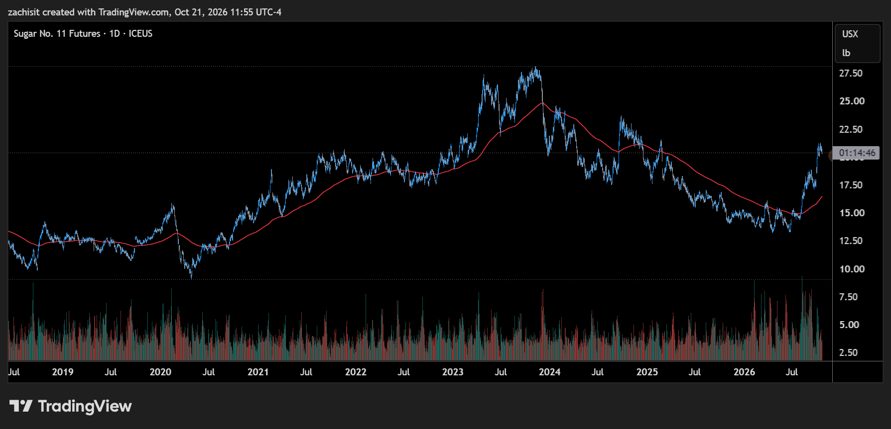

Sugar has been one of the best-performing commodities of 2026, and almost nobody planned for it. In February the continuous futures benchmark touched a low near 13.3 cents a pound. Forecasters were calling for a global surplus, and speculators held a record bet against the price. Eight months later the benchmark is around 20.4 cents. That is a comparison across successive delivery contracts, not the return on one contract held throughout, but the scale of the move is clear. The March 2027 contract set a high of 21.24 cents on Wednesday, October 7, and edged to 21.29 intraday on October 14, the highest level since early 2025.
Since then the market has gone quiet. Price has drifted sideways to slightly lower, and trading has thinned: average daily volume in the March contract fell about 42% from the first week of October to the October 14-20 stretch, according to Czarnikow’s daily data. A tight range on light volume after a fast move can mean two things. Either the buyers are resting, or nobody wants to own it at these levels anymore. To tell which, it helps to know what built the rally in the first place.

Leg One: Oil Set the Early-Season Mix
Brazil supplies about half of the world’s sugar exports, and its mills can choose, within limits, whether to turn cane into sugar or into ethanol. That choice links the sugar price to the oil price. When gasoline is expensive, ethanol pays better, mills make less sugar, and the world market tightens.
Oil has been expensive for most of this year. The US-Iran war and the disruption in the Strait of Hormuz pushed Brent to about $126 a barrel at the end of April. It went back above $100 in early September, briefly fell below it later that month, and touched a five-month high near $112 on October 20. Brazil leaned in on the policy side too. In July its National Energy Policy Council approved a temporary rise in the mandatory ethanol blend in gasoline to 32%, up from 30%, as part of an effort to cut fuel imports. USDA’s spring forecast had Brazil’s mills putting 48% of their cane into sugar this season, down from 49.5% last year. With sugar near 14 cents and fuel expensive, ethanol was the better product early in the season, and mills leaned that way.
There is a twist, and it matters for what comes next. By late summer the sugar rally had reversed the math. In a Reuters analysis on September 29, Veeries estimated that sugar was paying mills about 20% more than ethanol, and analysts at StoneX and Veeries argued that the weather, not prices, was now setting Brazil’s mix. “In the end, we are not looking anymore at market prices to guess the production mix,” said StoneX’s Marcelo Bonifacio Filho. The timing points the same way: Brent was above $100 through much of the spring while sugar sat between 13 and 16 cents, and sugar’s best month, August, came with Brent in the $80s and low $90s. Oil set the early-season mix and the blend mandate. It amplified this rally, but it did not start it.
Leg Two: Weather Cut Several Major Crops
Sugar rarely loses supply in several big producing regions in the same year. This year it has, with El Niño behind much of the damage. The Climate Prediction Center’s October 8 update put the Niño-3.4 index at +2.1°C. It gave an 83% chance that October-December will be a historic event, stronger than any El Niño in records back to 1950. That is a forecast probability, not an observed record.
Brazil. Parts of Brazil’s sugar belt had their wettest winter in more than a century, Reuters reported, citing the University of São Paulo, and September rain repeatedly interrupted harvesting and crushing. StoneX now sees Center-South sugar output at 38.0 million tonnes this season.
India. A weak, erratic monsoon hit Maharashtra and Karnataka, two of the three biggest cane states. The USDA’s New Delhi office cut its 2026/27 forecast to 29.5 million tonnes on a raw-value basis, roughly 27.6 million tonnes of white-sugar equivalent, from 33.6 million raw-value tonnes. Separately, StoneX forecasts 28.0 million tonnes of white sugar after ethanol diversion, against consumption of 28.5 million. India banned sugar exports in May (through September 30), imposed stock limits on dealers, and in August opened a duty-free quota to import 1 million tonnes of raw sugar through October 31, its first such import window in nearly a decade.
Thailand. StoneX projects output down 20% to 9.6 million tonnes.
Europe. Südzucker, Europe’s largest sugar producer, says heat and drought since June, along with a smaller planted area and pest pressure, have cut beet yields, especially in southern Germany and France. It expects significantly lower production.
Put together, the world balance has flipped. A year ago the industry expected a comfortable surplus. Now the major forecasters expect a deficit for 2026/27, though they disagree widely on how big it will be. Green Pool has forecast a gap above 3 million tonnes. StoneX recently cut its estimate to 0.9 million from 1.7 million, and Czarnikow raised its own to 0.5 million on October 9.
Leg Three: The Funds Were on the Wrong Side
The rally had a third leg that had nothing to do with cane. In mid-February, hedge funds held one of the largest bets against sugar on record. On the CFTC’s futures-only data, managed money was net short 231,762 contracts on February 17. Measured across futures and options, Barchart put the speculative net short that week at a record of about 265,000. When the weather turned, those shorts had to be bought back, and buying to cover a short pushes the price up just like any other buying. August was sugar’s strongest month since October 2010.
By October 13, the same CFTC series showed managed money holding 352,283 long contracts against 92,734 short, a net long of 259,549. That is a swing of about 491,000 contracts in eight months. Saxo put the fund net long just below its 2023 record as of October 6. Much of the earlier short has been covered, which leaves the market more exposed to long liquidation, though further short covering and new buying are still possible. On the other side, producers and merchants held 563,724 short contracts and added about 9,100 that week. They are the mills and trading houses that sell forward to lock in prices, and they are using the rally to do it.
Why the Rally Has Stalled
Much of the earlier short covering has already happened. Several things this month give new buyers a reason to wait.
The curve’s nearby premium is fading. On October 20, the March 2027 contract settled at 20.52 cents, May at 19.87 and July at 19.43, according to Czarnikow’s daily data. The curve still prices earlier supply above later supply, consistent with relative tightness before Brazil’s next harvest. Part of that March-May premium is seasonal, since March falls in Brazil’s off-crop. But the premium is shrinking: March-May narrowed to 0.65 cents on October 20 from 0.81 on October 15.
Deliveries show neither a glut nor a squeeze. The exchange confirmed about 1.45 million tonnes delivered against the October contract when it expired on September 30. Traders said Wilmar received all of it. That is smaller than each of the previous three October deliveries. Delivery size alone doesn’t measure end demand, though, since a receiver can take sugar for trading, storage or refining.
StoneX argues rain delays the crop more than it destroys it. Much of the cane Brazil’s mills could not crush this year is still in the field. StoneX estimates about 32 million tonnes of cane will carry over into next season. It expects Center-South sugar output to rebound to 42.4 million tonnes in 2027/28. It also expects the world trade flow to show a surplus in the fourth quarter of this year, before a white-sugar deficit in the first half of 2027. The downward-sloping curve fits that recovery scenario. But it is one house’s view: cane left standing can lose sugar content, and Czarnikow has warned that El Niño could cut rain in early 2027 and hurt next season’s crop.
Demand is soft. On October 9, Czarnikow cut its 2026/27 consumption forecast, citing weaker demand in parts of the Middle East and North Africa and only modest growth elsewhere, as high food prices, product reformulation and GLP-1 drugs weigh on intake. It also noted that the tightness is concentrated in white sugar, where smaller EU exports and the absence of India and the UAE matter most. Tight white supply does not automatically mean the same tightness in the raw sugar that New York futures deliver.
India is turning cane back toward sugar. On October 16, India’s state oil companies issued their ethanol tender for 2026/27 without the feedstocks made directly from cane: juice, syrup and B-heavy molasses. If the tender stays unchanged and mills drop the diversion StoneX assumed, roughly a million tonnes more could be available as sugar. It makes a second duty-free import window less likely and, over time, could bring Indian exports back. India partly reversed a similar ban within about a week in 2023, capping diversion rather than banning it, so the policy may not stick. For now it pushes against the rally.
Against all that, the forces that built the rally are still in place. El Niño is still strengthening, oil is at a five-month high, and India’s crop is still small. The result is a range on fading volume. Funds are still adding longs and producers are still adding hedges, but both are adding slowly while price goes nowhere.
The Reusable Lesson
When a commodity rallies for several reasons at once, list the reasons and check which ones are still adding fuel. In sugar, positioning has gone from a source of buying to a source of risk: a large fund long could turn into heavy selling if the weather improves. Oil is rising again, but as of late September sugar paid mills more than ethanol, which weakened oil’s pull on Brazil’s mix. Weather appears to be the most immediate supply variable now, while India’s policy and changes in mill economics could still shift the balance. A quiet range is the market admitting it doesn’t know yet.
What to Watch Next
First, the range itself. A daily close above the mid-October high of about 21.3 cents with volume picking up would suggest new buyers have arrived. A break below 20 cents on heavier volume would raise the risk of a larger reversal, and the CFTC data that follow would show whether funds were the ones selling. Second, the weather data. Watch UNICA’s fortnightly crush reports for whether Brazil’s mills catch up, the Indian Sugar Mills Association’s first estimate for the season, and the Climate Prediction Center’s next ENSO update on November 12. Third, India’s policy. The duty-free import window closes October 31, the export ban’s status for the new season is unclear, and the ethanol tender could be revised. Fourth, oil and Hormuz. Lower oil would tend to weaken ethanol’s appeal, though the effect on Brazil’s mix depends on local fuel prices and the blend mandate. Fifth, the curve. March-May has already narrowed from 0.81 cents to 0.65 since October 15. If it keeps shrinking toward zero, the market is pricing the shortage as past its peak.
Views are our own and are provided for information only; nothing here is investment advice or a recommendation. Price levels refer to ICE Sugar No. 11 futures. The continuous series (SB1!) splices successive delivery contracts, so the February-to-October comparison spans several contracts; intraday highs, settlements, spreads and volumes are for individual contracts from Czarnikow’s daily market data, October 1-20, 2026. Positioning: CFTC Disaggregated Commitments of Traders, futures only, February 17 and October 13, 2026; the futures-and-options record short is Barchart’s, and the 2023-record comparison is Saxo’s, as of October 6. El Niño: NOAA Climate Prediction Center, October 8, 2026. India: USDA FAS Sugar Semi-annual, New Delhi (IN2026-0051), raw value. Brazil mix: USDA FAS Sugar Annual, Brasilia (BR2026-0020) and Reuters, September 29, 2026. Balances: ISO Quarterly Market Outlook, August 2026 and Czarnikow, October 9, 2026. StoneX figures (Outlook, Edition 37) and Südzucker’s comments are as reported by secondary sources on October 8, 2026. Other policy, delivery and oil figures via public reporting (Reuters, Bloomberg, Business Standard, The Tribune), April-October 2026.
The $100 Tax
Brent topped $100 as the Iran war hit Saudi refineries and the Strait of Hormuz. The same oil shock is now running through Brazil’s cane mills. Read how the market priced triple-digit crude.
Read the oil note